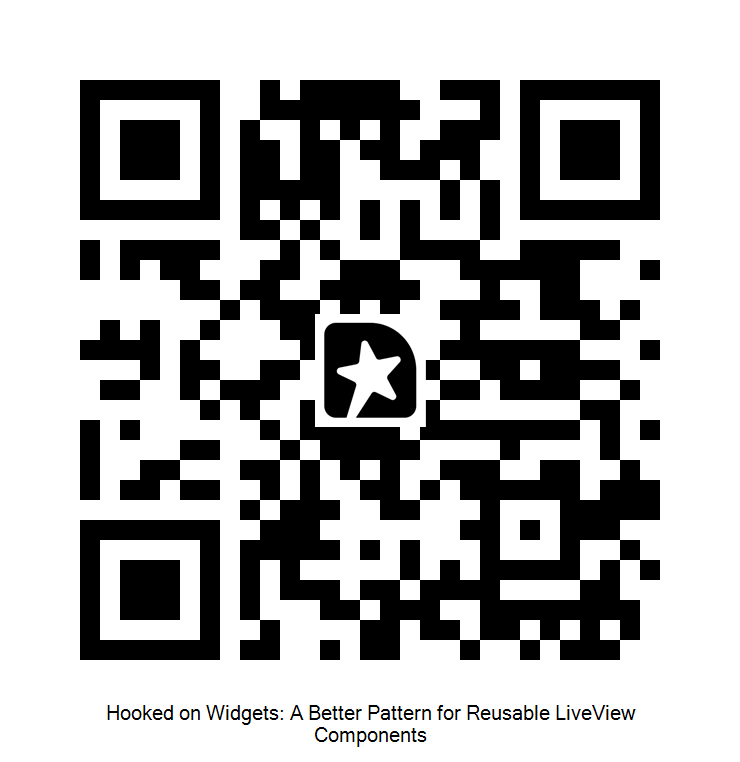

Hooked on Widgets
A Better Pattern for Reusable LiveView Components
Jakub Lambrych
- The talk, *“Hooked on widgets”*, comes from real problems I’ve run into while building LiveView apps
- Multiple clients.
- Share a practical pattern for building
- reusable,
- stateful components
- feel a bit more natural.
---
Who am I?
Jakub Lambrych
Software Developer at Curiosum
2+ years Elixir professionally
UNICEF Innovation · Microsoft R&D
Engineer with a Philosophy degree
- Curiosum - Booth
- 2 years
- Unusual background
- Leading innovation teams + programs
- Designing + building Social impact
- UN in Thailand -> Thai Gov -> Internet -> children
- Today -> First time -> Conference -> Speaker
- Hooked on Elixir and on Widget
The Requirements
Live Widget?
1
Stateful
2
Interactive
— handle_event
3
Message-driven
— handle_info, PubSub
4
URL-aware
— handle_params
5
Multiple
— instances on one page
- **Not only** handle their own behaviour
- React to PubSub messages
- Have access to the URL
- **Minimal setup**
- Think of
- notification component or
- internal chat widget
- ASIDE panel living across many unrelated view.
---
Why the obvious approaches fail
Close, but not enough
LiveComponents
❌ No handle_info — parent must forward PubSub
❌ No handle_params — parent must forward URL state
❌ Widget logic bleeds into parent
Embedded LiveViews
❌ Separate BEAM process per widget
❌ No access to parent URL params
❌ PIDs end up in browser cookies
- Building such component has been challenging.
- LiveComponents -> can’t access the process mailbox for PubSub integration,
- Embedded ->
- performance overhead
- complex communication patterns.
-
The Insight
"I'd say hooks are more powerful and provide a better foundation than LiveComponents for building new abstractions."
— José Valim, Elixir Forum
LiveView.attach_hook/4
- Research widgets -> quote -> form the God
- Elixir Forum -> great folks -> inspiration
- Hooks are the foundation of this design.
Chain of Responsability Design Pattern
LiveView Hook
Available hooks: :handle_event · :handle_info · :handle_params · :handle_async · :after_render
- Hooks intercept lifecycle stages
- Chain of Responsibility pattern
- Request travels down a chain of handlers.
- Each handler: halt or continue
---
One Module, Three Pillars
The Widget Blueprint
+
⚡
Behaviour
LiveView Hooks
+
🖼
Presentation
Function Component
LiveView socket is a single source of truth
- Knowledge -> Blueprint
- 3 pillars in Single Module
- State
- Behaviour
- Pure Function Component (state -> html)
- Everything in Socket
- No separate process.
- No hidden state.
- Easy Debug
-
Chat Widget
Example
1. Send messages - `event`
2. Receive messages - `PubSub`
3. Change chat room - through URL
Live Demo
See it in Action
- Narrate **what's happening**, not **how**. Build mystery.
- No separate process. No hidden state.
- Single line of setup
---
What the Parent LiveView Knows
Two Lines
def mount(_params, _session, socket) do
{:ok,
socket |> ChatWidget.assign_component(:chat_widget) # [!code highlight]
}
end
def render(assigns) do
~H"""
<div class="dashboard">
# [!code highlight]
<ChatWidget.display state={@chat_widget} />
</div>
"""
end
No handle_event. No handle_info. Nothing else.
- Two lines total
- One setup line
- One render line
- Parent knows nothing
- PubSub topics,
- message formats,
- event names,
- message lists"
---
%ChatWidget{}
State
defstruct [:key, :username, :messages, :topic]
- Struct is the state
- Four fields
- Key: important (used later)
-
---
One Function Does Everything
Assign Component
# [!code focus:6]
def assign_component(socket, key, opts \\ []) do
state = %ChatWidget{ # [!code highlight]
key: key,
topic: "chat:global"
# ...
}
socket
|> assign(key, state) # State in socket.assigns [!code focus] [!code highlight]
|> subscribe(state) # PubSub (once per topic)
|> reset_messages(key) # LiveView list/stream
|> maybe_attach_hooks() # Hooks (once per LV) # [!code focus] # [!code highlight]
end
- Back-ref to parent mount line
- Create state
- Assign to socket
- Subscribe to PubSub
- Prepare stream
- Maybe attach hooks (once only)
---
Declaring Hooks
# Attaches shared hooks when the first instance is added.
defp maybe_attach_hooks(socket) do
if single_instance?(socket) do
socket
|> attach_hook("chat_widget:event", :handle_event, &hooked_event/3) # [!code highlight]
|> attach_hook("chat_widget:info", :handle_info, &hooked_info/2)
|> attach_hook("chat_widget:params", :handle_params, &hooked_params/3)
else
socket
end
end
Available hooks: :handle_event · :handle_info · :handle_params · :handle_async · :after_render
- attach_hook: named callback to lifecycle stage
- Registering twice = exception
- single_instance? guard prevents duplicates
- Hooks: event, info, params, async, after_render
- Summurize what we know by bar
- One line to mount.
- assign component
- assign state
- register hooks
- One line to render.
- Zero parent wiring.
User Sends a Message
hooked_event/3
defp hooked_event(
"chat-widget:send", #namespaced event [!code highlight]
%{"message" => content, "chat-widget-key" => key}, #key always travels # [!code highlight]
socket) when content != "" do
%ChatWidget{} = state = socket.assigns[String.to_existing_atom(key)] # [!code highlight]
ChatContext.send_message(state.username, content, state.topic)
{:halt, socket} #[!code highlight]
end
defp hooked_event(_event, _params, socket), do: {:cont, socket}
- **Hook matches** on event prefix
- Event prefix: chat-widget: (namespace)
- Key **travels** in hidden field (which instance?)
- Extract state safely
- Return :halt (event stops here)
LiveView Hooks · Event Routing
:halt
vs
:cont
Widget Event
"chat-widget:send" (widget's event)
│
✓ hooked_event/3
│
"That's mine" -> {:halt, socket}
│
✕ handle_event (never reached)
LiveView Event
"save_settings" (parent's event)
│
✓ hooked_event/3
│
"Not mine" -> {:cont, socket}
│
✓ handle_event/3 (parent handles)
- :halt = stop chain, never reaches parent
- :cont = pass on
- Widget prefix: halt
- Parent event: cont
- Multiple handlers coexist
Message Arrives via PubSub
hooked_info/2
defp hooked_info({:new_message, %Message{} = msg}, socket) do
updated =
for {_key, %ChatWidget{} = s} <- socket.assigns, # [!code highlight]
s.topic == msg.topic, # Match chat room
reduce: socket do
socket -> insert_message(socket, s, msg)
end
{:cont, updated} # [!code highlight]
end
- PubSub arrives
- Scan all widget instances
- Match on topic
- Insert into stream
- Return :cont (others may care)
- Demo back-ref (LIveView counter)
---
Change Chat Room via URL params
handle_params/3
# [!code focus:5]
defp hooked_params(%{"topic" => topic}, _uri, socket) do # [!code highlight]
updated =
for {key, %ChatWidget{} = state} <- socket.assigns, reduce: socket do # [!code highlight]
socket ->
unsubscribe(state.topic) #
socket
|> assign(key, %{state | topic: topic})
|> reset_messages(key)
end
# [!code focus:2]
subscribe(topic)
{:cont, updated} # [!code highlight]
end
Navigating to ?topic=private switches rooms automatically.
- "Navigate to `?topic=private` -> switches rooms automatically.
- PubSub resubscribe.
- Back-reference: "This is what happened when I clicked that link in the demo."
Shared Subscription Manager
PubSub Pattern
- Problem: shared subscriptions
- One widget unsubscribes = all lose feed
- Solution: Subscription Manager
- Owns single subscription
- Tracks consumer count
- Consumers request via (**not directly**)
- Manages subscribe/unsubscribe
Trade off
Streams
%{
chat: %ChatWidget{key: :chat_widget, messages:
[{"msg-uuid-1", %Message{}}]}, # [!code highlight]
#...
streams: %{chat_widget:
[{"msg-uuid-1", %Message{}}]}, # [!code highlight]
} = socket.assigns
Socket Assigns
- Stream are fantastic.
- Streams = data to client, zero memory overhead
- Separate from assigns
- Copy stream into struct
- Same key in both
- Auto-syncs after stream op
- **Watch out**: This pattern can become a bottleneck with large datasets
---
The Problem
Stream Pruning
- LiveView prunes streams → struct copy stays
- Chat: negligible. Large datasets: stale data lingers
- 10k rows at mount → no sync until next event
- Idle widget = indefinite memory
- after_render hook? Works but fires constantly
- Cleaner way exists
-
Add attributes for stream
Stream Decoupling
# LiveView.render/1
# [!code word:message_stream={@streams.chat_widget}]
<ChatWidget.render state={@chat_widget} message_stream={@streams.chat_widget} />
Slightly less elegant — but correct memory behaviour.
- Don't embed stream → pass as separate attribute
- LiveView pruning works as designed
- Less elegant: parent refs @streams.chat_widget
- But: correct memory behavior
- Correctness over elegance
Hooked on Widgets
One line to mount. One line to render. Zero parent wiring.
📝 Article: "Hooking up with LiveView" — Curiosum Blog
👤 Jakub Lambrych — @utopos

Session feedback
- "The article walks through every detail - streams, memory trade-offs, testing, debugging."
- "The repo has the full dashboard with five widget types."
- "Thank you." Done. Clean. No lingering.